Planar and Radial Flows: Inverses, Volumes and Two Preserved Fits
Abstract
A density model must track how a learned coordinate change expands or contracts local area, while still recovering observations from latent draws. Planar and radial flows make those calculations small: one changes points along a learned direction, the other changes their distance from a centre. This native C++ study starts with hand-checkable maps, then preserves both original four-stage fits, strong-contraction fixtures, inverse parameter gradients and all 1,024 samples per family. Fixed-final test NLL is 2.991511106 for planar and 2.999574184 for radial, versus 2.994631823 for a fitting-only full Gaussian and 2.796480843 for analytic truth. The radial fit falls short of that Gaussian baseline. These short two-dimensional experiments reproduce the source; they do not establish performance across seeds or on full-image density tasks.
Two ways to make a tractable local volume change
[Rezende and Mohamed, Variational Inference with Normalizing Flows (2015)](https://arxiv.org/abs/1505.05770) introduces planar and radial flow families. Here they are standalone exact-density models, with no VAE or ELBO workflow. Each family applies four elementary maps and a positive diagonal scale, transforming observations x into standard-Gaussian coordinates z:
The fitting objective is negative mean log density, in nats per two-coordinate row. Sampling starts with a supplied Gaussian z, removes the global scale, then reverses stages 3,2,1,0. Each inverse log determinant is evaluated along its own supplied path, rather than copied from a previous forward batch.
#include <dm/dm.hpp>
int main(){
std::filesystem::create_directories("build");dm::graphics::Diagram d(28,1150);
dm::graphics::DiagramNodeStyle s;s.width=10;s.height=5;s.font_size=32;
d.node("input",{-24,0},"Two coordinates\nChoose one family",s)
.node("map",{-11,0},"Planar tanh shift\nRadial radius change",s)
.node("volume",{2,0},"Positive determinant\nOwn inverse path",s)
.node("stack",{15,0},"4 elementary maps\nPositive global scale",s)
.node("density",{28,0},"Gaussian base\nAdd per-row logdet",s)
.edge("input","map").edge("map","volume").edge("volume","stack").edge("stack","density")
.save_svg("build/pr_method.svg");
}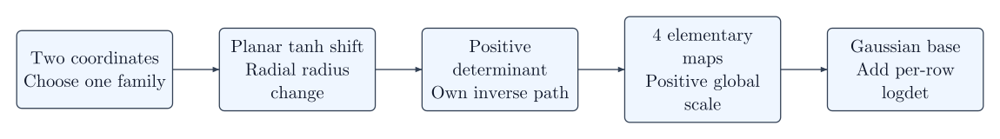
Derive the planar determinant and numerical inverse
Let d=(cos a,sin a), e=exp(f), p=softplus(raw_projection)−.9, and u=(p/e)d+q(−sin a,cos a), w=ed. Thus wᵀu=p>−.9>−1. The map is
The rank-one determinant lemma gives the last equality. To invert y, form c=wᵀy+b; the unknown t solves t+p tanh(t)=c. Its derivative is the positive factor above, so there is one root. Since p tanh(t)<=p, c±(p+1) brackets it. The source runs 32 bisections, then one Newton correction with stopped root r and stopped denominator D=1+p(1−tanh²r):
This is a numerical inverse. First derivatives follow the source implicit correction without differentiating discrete bisection branches. Higher graphs remain live through that correction, but their values follow the stopped root and denominator; they are not exact higher implicit derivatives. Finite root and floating-point residuals remain.
For a small worked map choose a=f=b=0, p=.5 and q=.25. Then y0=x0+.5 tanh(x0), y1=x1+.25 tanh(x0), det J=1+.5 sech²(x0). At the origin, (0,0) stays fixed, J=[[1.5,0],[.25,1]], det J=1.5. On the x1=0 slice, the first panel shows both changed coordinates and the second shows the actual determinant. All five checked points and 257 native curve evaluations are retained; no fitting data enter this example.
#include <dm/dm.hpp>
int main(){
namespace n=dm::nn;namespace m=n::models;auto type=n::DType::Float64;
auto scalar=[&](double v){return n::full({},v,type);};auto zero=scalar(0),raw=scalar(std::log(std::expm1(1.4))),q=scalar(.25);
auto axis=n::from_vector(std::vector<double>{-2,-1,0,1,2},{5});auto x=n::stack({axis,n::zeros({5},type)},1).requires_grad_();
auto f=m::PlanarFlow(x,zero,zero,raw,q,zero),rec=m::PlanarFlow(f.value,zero,zero,raw,q,zero,true);
auto keep=n::GradOptions{true,false,false};auto j0=n::grad(n::sum(n::slice_axis(f.value,1,0,1)),{x},keep)[0],j1=n::grad(n::sum(n::slice_axis(f.value,1,1,2)),{x},keep)[0];
auto det=n::select(j0,1,0)*n::select(j1,1,1)-n::select(j0,1,1)*n::select(j1,1,0);
auto wanted=n::stack({axis+.5*n::tanh(axis),.25*n::tanh(axis)},1),wanted_det=1.+.5*(1.-n::square(n::tanh(axis)));
if(n::max(n::abs(f.value-wanted)).item()>1e-14||n::max(n::abs(det-wanted_det)).item()>1e-14||n::max(n::abs(rec.value-x)).item()>1e-14||n::max(n::abs(n::log(det)-f.logdet)).item()>1e-14)throw std::runtime_error("Worked planar map");
auto dense=n::arange(0,257,1,type)/64.-2.;auto curve_input=n::stack({dense,n::zeros({257},type)},1).requires_grad_();auto curve=m::PlanarFlow(curve_input,zero,zero,raw,q,zero);
auto a=n::grad(n::sum(n::slice_axis(curve.value,1,0,1)),{curve_input},keep)[0],b=n::grad(n::sum(n::slice_axis(curve.value,1,1,2)),{curve_input},keep)[0];
auto curve_det=n::select(a,1,0)*n::select(b,1,1)-n::select(a,1,1)*n::select(b,1,0);
auto left=dm::graphics::RPlot::create();
left.lines(dense.to_vector<double>(),n::select(curve.value,1,0).to_vector<double>(),"y0 = x0 + .5 tanh(x0)",{37,99,235})
.lines(dense.to_vector<double>(),n::select(curve.value,1,1).to_vector<double>(),"y1 = .25 tanh(x0)",{234,88,12})
.points(axis.to_vector<double>(),n::select(f.value,1,0).to_vector<double>(),"Five y0 checks",{37,99,235},4)
.points(axis.to_vector<double>(),n::select(f.value,1,1).to_vector<double>(),"Five y1 checks",{234,88,12},4)
.margins(78,22,54,70).x_limits(-2.3,2.3).y_limits(-2.8,5).x_label("Input x0, x1=0").y_label("Output coordinate").title("Planar: rank-one tanh change");
auto right=dm::graphics::RPlot::create();right.lines(dense.to_vector<double>(),curve_det.to_vector<double>(),"Actual determinant",{37,99,235})
.lines({-2,2},{1,1},"Identity area factor",{148,163,184})
.points(axis.to_vector<double>(),det.to_vector<double>(),"Five actual checks",{220,38,38},4)
.margins(78,22,54,70).x_limits(-2.3,2.3).y_limits(.9,2.2).x_label("Input x0").y_label("Positive area factor").title("det J = 1 + .5 sech^2(x0)");
dm::graphics::RLayout::create(1,2).add(left).add(right).size(1100,520).fit_panels().save_svg("build/pr_planar_toy.svg");
n::save_npz("build/pr_planar_toy_values.npz",{{"axis",axis},{"input",x},{"value",f.value},{"logdet",f.logdet},{"actual_determinant",det},{"recovered",rec.value},{"inverse_logdet",rec.logdet},{"dense_axis",dense},{"curve",curve.value},{"curve_determinant",curve_det}});
std::print("| x0 | y0 | y1 | Actual determinant |\n|---:|---:|---:|---:|\n");auto a0=axis.to_vector<double>(),v=f.value.to_vector<double>(),dv=det.to_vector<double>();
for(int i=0;i<5;++i)std::print("|{:.1f}|{:.10f}|{:.10f}|{:.10f}|\n",a0[i],v[2*i],v[2*i+1],dv[i]);
}| x0 | y0 | y1 | Actual determinant |
|---|---|---|---|
| -2.0 | -2.4820137900 | -0.2410068950 | 1.0353254124 |
| -1.0 | -1.3807970780 | -0.1903985390 | 1.2099871708 |
| 0.0 | 0.0000000000 | 0.0000000000 | 1.5000000000 |
| 1.0 | 1.3807970780 | 0.1903985390 | 1.2099871708 |
| 2.0 | 2.4820137900 | 0.2410068950 | 1.0353254124 |
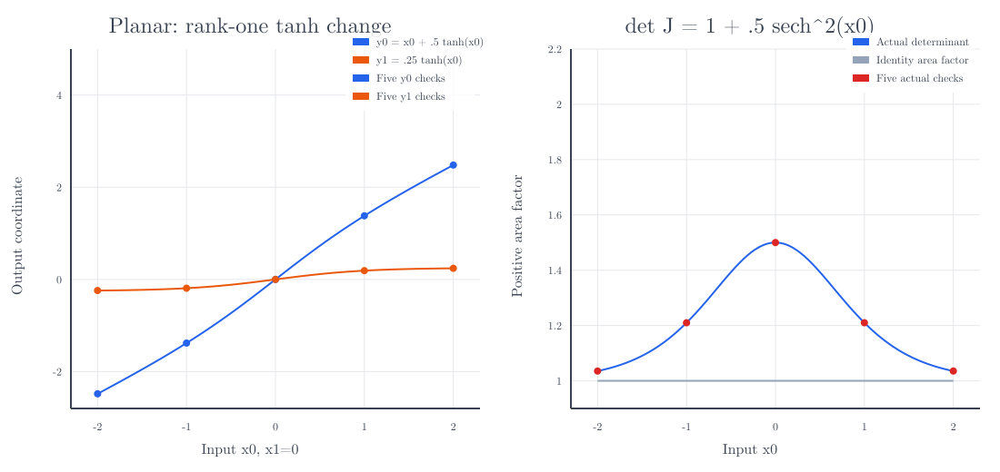
Derive radial tangential and radial factors
With centre c, r=|x−c|, alpha=.1+softplus(raw_alpha)>0 and beta=softplus(raw_beta)−alpha>−alpha, write
For r>0, the tangential eigenvalue is g(r); the radial one is g(r)+r g'(r)=1+beta alpha/(alpha+r)². Both stay positive under beta>−alpha. At the centre, the value Jacobian is (1+beta/alpha)I. The source selects a zero radius derivative there, including its chosen logdet partial; it does not claim a smooth mathematical Hessian of radius or logdet at the centre. Tiny positive squared radii use sqrt(max(square,1e−30)), preserving the source rule.
For an inverse input distance rho=|y−c|, the source radius solves r²+(alpha+beta−rho)r−alpha rho=0. Let a=alpha+beta−rho and s=sqrt(a²+4 alpha rho). Use 2 alpha rho/(a+s) when a>=0, or (s−a)/2 otherwise, with a stabilized inactive denominator. This avoids cancellation in the positive root. Recover x=c+(y−c)/g(r) and negate the forward log determinant at recovered r. Both branches are retained.
Choose c=0, alpha=1 and beta=1 for a worked expansion. Radii 0,.5,1,2 map to 0,5/6,1.5,8/3. The origin has value Jacobian 2I and area factor 4. The curves below retain 257 native evaluations; all four rational-radius checks, their actual two-dimensional determinants and stable inverses are checked.
#include <dm/dm.hpp>
int main(){
namespace n=dm::nn;namespace m=n::models;auto type=n::DType::Float64;
auto center=n::zeros({2},type),alpha=n::full({},std::log(std::expm1(.9)),type),beta=n::full({},std::log(std::expm1(2.)),type);
auto axis=n::from_vector(std::vector<double>{0,.5,1,2},{4});auto x=n::stack({axis,n::zeros({4},type)},1).requires_grad_();
auto f=m::RadialFlow(x,center,alpha,beta),rec=m::RadialFlow(f.value,center,alpha,beta,true);auto keep=n::GradOptions{true,false,false};
auto j0=n::grad(n::sum(n::slice_axis(f.value,1,0,1)),{x},keep)[0],j1=n::grad(n::sum(n::slice_axis(f.value,1,1,2)),{x},keep)[0];
auto det=n::select(j0,1,0)*n::select(j1,1,1)-n::select(j0,1,1)*n::select(j1,1,0),wanted=n::from_vector(std::vector<double>{0,5./6.,1.5,8./3.},{4});
auto wanted_det=(1.+1./(1.+axis))*(1.+1./n::square(1.+axis));
if(n::max(n::abs(n::select(f.value,1,0)-wanted)).item()>1e-14||n::max(n::abs(det-wanted_det)).item()>1e-14||n::max(n::abs(rec.value-x)).item()>1e-14||n::max(n::abs(n::log(det)-f.logdet)).item()>1e-14)throw std::runtime_error("Worked radial map");
auto dense=n::arange(0,257,1,type)/128.;auto grid=n::stack({dense,n::zeros({257},type)},1).requires_grad_();auto curve=m::RadialFlow(grid,center,alpha,beta);
auto a=n::grad(n::sum(n::slice_axis(curve.value,1,0,1)),{grid},keep)[0],b=n::grad(n::sum(n::slice_axis(curve.value,1,1,2)),{grid},keep)[0];
auto curve_det=n::select(a,1,0)*n::select(b,1,1)-n::select(a,1,1)*n::select(b,1,0);
auto left=dm::graphics::RPlot::create();left.lines(dense.to_vector<double>(),n::select(curve.value,1,0).to_vector<double>(),"Native output radius",{37,99,235})
.lines({0,2},{0,2},"Identity radius",{148,163,184}).points(axis.to_vector<double>(),wanted.to_vector<double>(),"Four rational checks",{220,38,38},4)
.margins(78,22,54,70).x_limits(-.1,2.1).y_limits(-.1,4.2).x_label("Input radius r").y_label("Output radius").title("Radial: r maps to r + r/(1+r)");
auto right=dm::graphics::RPlot::create();right.lines(dense.to_vector<double>(),curve_det.to_vector<double>(),"Actual determinant",{37,99,235})
.lines({0,2},{1,1},"Identity area factor",{148,163,184}).points(axis.to_vector<double>(),det.to_vector<double>(),"Four actual checks",{220,38,38},4)
.margins(78,22,54,70).x_limits(-.1,2.1).y_limits(.8,6.2).x_label("Input radius r").y_label("Positive area factor").title("Tangential times radial factor");
dm::graphics::RLayout::create(1,2).add(left).add(right).size(1100,520).fit_panels().save_svg("build/pr_radial_toy.svg");
n::save_npz("build/pr_radial_toy_values.npz",{{"axis",axis},{"input",x},{"value",f.value},{"actual_determinant",det},{"logdet",f.logdet},{"recovered",rec.value},{"inverse_logdet",rec.logdet},{"dense_axis",dense},{"curve",curve.value},{"curve_determinant",curve_det}});
std::print("| Input radius | Output radius | Actual determinant |\n|---:|---:|---:|\n");auto xv=axis.to_vector<double>(),yv=n::select(f.value,1,0).to_vector<double>(),dv=det.to_vector<double>();
for(int i=0;i<4;++i)std::print("|{:.1f}|{:.10f}|{:.10f}|\n",xv[i],yv[i],dv[i]);
}| Input radius | Output radius | Actual determinant |
|---|---|---|
| 0.0 | 0.0000000000 | 4.0000000000 |
| 0.5 | 0.8333333333 | 2.4074074074 |
| 1.0 | 1.5000000000 | 1.8750000000 |
| 2.0 | 2.6666666667 | 1.4814814815 |
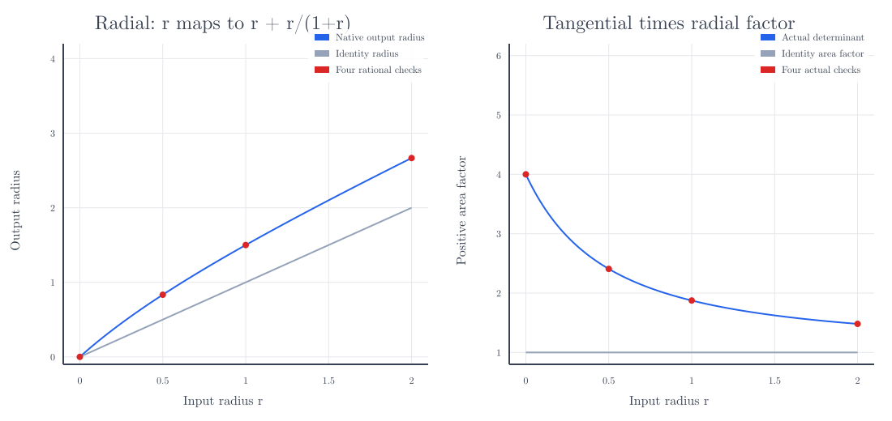
Preserve the analytic banana protocol
The source observation pools are procedural teaching data. Draw independent standard-Gaussian pairs u,v, then set x0=u, x1=v+.5(u²−1). This triangular map has determinant one and inverse v=x1−.5(x0²−1), so its analytic density is the standard-Gaussian density at that inverse. Five exact points illustrate the bend before any fitting. Both flow families receive the same 512 fitting, 128 validation and 128 test rows, with source seeds 9203,9209,9221 and source-ID offsets 0,10000,20000. Native midpoint-MT Box-Muller draws are formed in Double; the banana transform is cast to source Float32 observations. All 1,024 supplied Gaussian prior rows use seed 9257. No external dataset or substitute distribution is introduced.
#include <dm/dm.hpp>
int main(){
namespace n=dm::nn;namespace m=n::models;auto type=n::DType::Float64;
auto u=n::from_vector(std::vector<double>{-2,-1,0,1,2},{5});auto base=n::stack({u,n::zeros({5},type)},1);
auto points=m::BananaPoints(base,.5,type);auto target=n::from_vector(std::vector<double>{1.5,0,-.5,0,1.5},{5});
if(!n::equal_bits(n::select(points,1,1),target)||n::max(n::abs(m::BananaLogProbability(points)-m::StandardNormalLogProbability(base))).item()>1e-14)throw std::runtime_error("Analytic banana");
auto axis=n::arange(0,129,1,type)/32.-2.;auto curve=m::BananaPoints(n::stack({axis,n::zeros({129},type)},1),.5,type);
dm::graphics::RPlot::create().lines(axis.to_vector<double>(),n::select(curve,1,1).to_vector<double>(),"v=0 banana curve",{37,99,235})
.points(u.to_vector<double>(),std::vector<double>(5,0),"Base v=0",{100,116,139},5)
.points(u.to_vector<double>(),target.to_vector<double>(),"Five native points",{220,38,38},4)
.y_limits(-.7,2.6).x_label("u = x0").y_label("x1 = v + .5(u^2 - 1)")
.title("Unit-volume bending gives an analytic teaching density").save_svg("build/pr_banana_toy.svg");
std::print("Five exact banana coordinates; native analytic log densities match their inverse standard-normal coordinates.\n");
}Five exact banana coordinates; native analytic log densities match their inverse standard-normal coordinates.
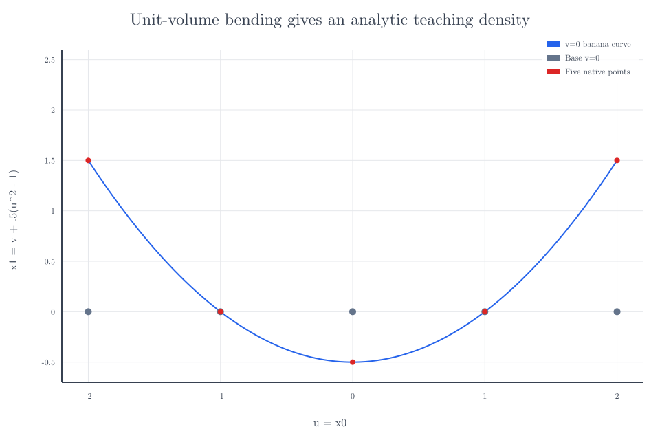
Trace both independently parameterized four-stage models
Each planar block owns five scalar leaves: angle, log_frequency, raw_projection, perpendicular and bias. Source angles use Float32 arithmetic .4f+.65f*block before promotion; alternating perpendicular values use .02f and −.02f. The other initial values are 0,.4,.05 respectively. Four blocks plus global log_scale[2] give *22 values in 21 leaves*. Each radial block owns centre[2] initialized normal(.2), raw_alpha=.4 and raw_beta=.56: four values in three leaves. Four plus the global two give *18 values in 13 leaves*.
Both separate stores use seed 9903. Warm forward blocks 0..3 then global scale to retain source initialization order; the optional reference initialization arrays are absent. The following diagrams execute the selected native family and group two blocks per stage: planar 10+10+2 values, radial 8+8+2. Public factor/coordinate fields have family-specific meanings; the old source archives call them coupling_scale/coupling_shift. These are diagnostics, not affine log scales or shifts.
#include <dm/dm.hpp>
int main(){
namespace n=dm::nn;n::ParameterStore p(9903);
n::Module model([&](const n::Tensor& x){auto o=n::models::PlanarRadialDensity(p,x,false);
n::model_stage("Planar stages 0 / 1",x,o.flow1);
n::model_stage("Planar stages 2 / 3",o.flow1,o.unscaled);
return n::model_stage("Positive diagonal scale",o.unscaled,o.latent);
},"Planar: 22 values / 21 leaves");
n::ModelPlotOptions options;options.detail=n::ModelPlotDetail::Blocks;options.sizing.minimum_extent=2;options.sizing.max_planes=2;
auto figure=model.plot(n::zeros({1,2}),options);
if(figure.parameter_count()!=22||p.size()!=21)throw std::runtime_error("Executed Planar census");
figure.save_svg("build/pr_planar_network.svg");
}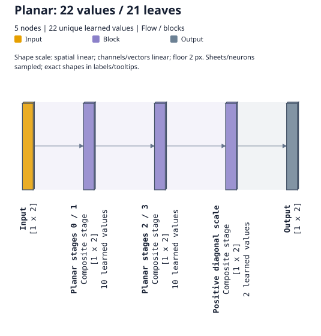
#include <dm/dm.hpp>
int main(){
namespace n=dm::nn;n::ParameterStore p(9903);
n::Module model([&](const n::Tensor& x){auto o=n::models::PlanarRadialDensity(p,x,true);
n::model_stage("Radial stages 0 / 1",x,o.flow1);
n::model_stage("Radial stages 2 / 3",o.flow1,o.unscaled);
return n::model_stage("Positive diagonal scale",o.unscaled,o.latent);
},"Radial: 18 values / 13 leaves");
n::ModelPlotOptions options;options.detail=n::ModelPlotDetail::Blocks;options.sizing.minimum_extent=2;options.sizing.max_planes=2;
auto figure=model.plot(n::zeros({1,2}),options);
if(figure.parameter_count()!=18||p.size()!=13)throw std::runtime_error("Executed Radial census");
figure.save_svg("build/pr_radial_network.svg");
}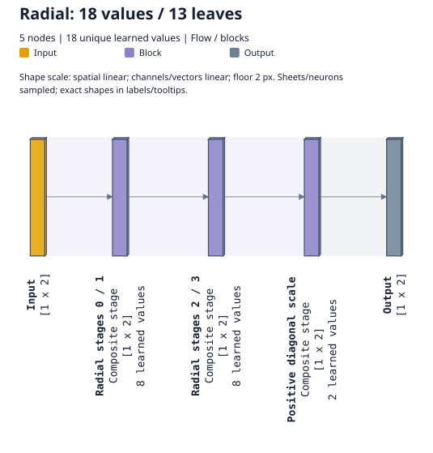
Run both complete fitting, inverse-gradient and sampling workflows
This editable C++ program is the experiment. The outer family loop creates a separate store, Adam(.003; beta1 .9, beta2 .999, epsilon 1e−8), and BatchOrder(512,32,9921) for each family. Each runs exactly three epochs and 48 explicit optimizer writes, 96 in total. Validation is reported each epoch; epoch 3 is selected in advance, with no test-driven checkpoint choice.
The program preserves both strong elementary fixtures before fitting. After saving and bit-exactly restoring final weights, it differentiates a distinct inverse objective on the original first eight prior rows: mean(||inverse(z)||²)+.3 mean(inverse_logdet). It retains every parameter partial. It then computes actual whole-map Jacobians, all 1,024 inverse samples per family, roundtrips, per-point determinants, normalization identities, 128-square density grids and fitting-only Gaussian baselines. The grid and sample diagnostics are immutable inference; neither changes learned leaves. Native operations own numerical/model computation. The visible caller owns every fit, evaluation, restore and reporting step.
#include <dm/dm.hpp>
namespace n=dm::nn;namespace m=n::models;namespace fs=std::filesystem;
using T=n::Tensor;using A=std::map<std::string,T>;
void Require(bool ok,const std::string& what){if(!ok)throw std::runtime_error(what);}
void Save(const fs::path& file,const A& fields){
n::NamedTensors named;for(const auto& [key,value]:fields)named.emplace_back(key,value);
n::save_npz(file.string(),named);
}
A Weights(const n::ParameterStore& p){
A out;for(const auto& name:p.names())out.emplace(name,p.at(name).detach().clone());return out;
}
bool Equal(const A& a,const A& b){
if(a.size()!=b.size())return false;
for(const auto& [key,value]:a)if(!b.count(key)||!n::equal_bits(value,b.at(key)))return false;
return true;
}
T Column(const T& x,int k){return n::slice_axis(x,1,k,k+1);}
void Near(double actual,double expected,double tolerance,const std::string& what){Require(std::abs(actual-expected)<=tolerance,what);}
void ElementaryFixtures(const fs::path& root, bool radial) {
n::ParameterStore p(3);
{
n::NoGradGuard none;
m::ElementaryFlow(p, n::zeros({1, 2}), 0, radial);
}
auto set = [&](const std::string& key, double value) {
p.set("flow0/" + key, n::full({}, value));
};
if (radial) {
p.set("flow0/center", n::from_vector(std::vector<float>{.3f, -.2f}, {2}));
set("raw_alpha", .4f);
set("raw_beta", float(std::log(std::expm1(.12))));
} else {
set("angle", .6f), set("log_frequency", .3f), set("raw_projection", -6.f),
set("perpendicular", .7f), set("bias", .1f);
}
std::vector<float> points{.3f, -.2f, 0, 0, 1, 0, 0, 1, -1, -1, 3, -2, -3, 2, 10, -10, -10, 10};
if (!radial)
points[0] = float(-.1 * std::cos(.6) / std::exp(.3)),
points[1] = float(-.1 * std::sin(.6) / std::exp(.3));
const T values = n::from_vector(points, {9, 2});
T x = values.clone();
x.requires_grad_();
const auto f = m::ElementaryFlow(p, x, 0, radial),
back = m::ElementaryFlow(p, f.value, 0, radial, true),
inv = m::ElementaryFlow(p, x, 0, radial, true);
const n::GradOptions keep{true, false, false};
A saved{
{"input", values},
{"forward", f.value},
{"forward_logdet", f.logdet},
{"roundtrip", back.value},
{"inverse", inv.value},
{"inverse_logdet", inv.logdet}};
for (int c = 0; c < 2; ++c) {
saved["jacobian_row" + std::to_string(c)] = n::grad(n::sum(Column(f.value, c)), {x}, keep)[0];
saved["inverse_jacobian_row" + std::to_string(c)] =
n::grad(n::sum(Column(inv.value, c)), {x}, keep)[0];
}
for (const auto& name : p.names())
saved[name] = p.at(name);
for (auto& [k, v] : saved)
v = v.detach().contiguous();
const auto rv = saved["roundtrip"].to_vector<float>(),
j0 = saved["jacobian_row0"].to_vector<float>(),
j1 = saved["jacobian_row1"].to_vector<float>(),
lv = saved["forward_logdet"].to_vector<float>();
for (int i = 0; i < 18; ++i)
Near(rv[i], points[i], 2e-5, "strong contraction roundtrip");
for (int b = 0; b < 9; ++b) {
const double determinant =
double(j0[b * 2]) * j1[b * 2 + 1] - double(j0[b * 2 + 1]) * j1[b * 2];
Require(determinant > 0, "contractive fixture invertible");
Near(std::log(determinant), lv[b], 2e-5, "contractive fixture actual Jacobian logdet");
}
Save(root/"elementary_fixtures.npz",saved);
}
A Evaluate(n::ParameterStore& p,const T& x,bool radial){
auto input=x.detach().clone().requires_grad_();auto path=m::PlanarRadialDensity(p,input,radial);
auto rec=m::PlanarRadialInverse(p,path.latent,radial);auto density=m::NormalFlowDensity(path.latent,path.logdet,true);
A out{{"latent",path.latent},{"unscaled",path.unscaled},{"reconstruction",rec.value},
{"base_log_probability",density.base_log_probability},{"log_probability",density.log_probability},
{"forward_logdet",path.logdet},{"inverse_logdet",rec.logdet},{"loss",density.loss},
{"coupling0",path.flow0},{"coupling_logdet0",path.flow_logdet0},{"coupling_scale0",path.flow_factor0},{"coupling_shift0",path.flow_coordinate0},{"coupling1",path.flow1},{"coupling_logdet1",path.flow_logdet1},{"coupling_scale1",path.flow_factor1},{"coupling_shift1",path.flow_coordinate1},{"coupling2",path.flow2},{"coupling_logdet2",path.flow_logdet2},{"coupling_scale2",path.flow_factor2},{"coupling_shift2",path.flow_coordinate2},{"coupling3",path.flow3},{"coupling_logdet3",path.flow_logdet3},{"coupling_scale3",path.flow_factor3},{"coupling_shift3",path.flow_coordinate3}};
for(int k=0;k<2;++k)out["jacobian_row"+std::to_string(k)]=n::grad(n::sum(Column(path.latent,k)),{input},n::GradOptions{true,false,false})[0];
for(auto& [key,value]:out)value=value.detach().contiguous();return out;
}
A Sample(n::ParameterStore& p,const T& z,bool radial){
auto prior=z.detach().clone().requires_grad_();auto inv=m::PlanarRadialInverse(p,prior,radial);
auto roundtrip=m::PlanarRadialDensity(p,inv.value,radial).latent;
A out{{"prior",z},{"samples",inv.value},{"prior_roundtrip",roundtrip},{"inverse_logdet",inv.logdet}};
for(int k=0;k<2;++k)out["inverse_jacobian_row"+std::to_string(k)]=n::grad(n::sum(Column(inv.value,k)),{prior},n::GradOptions{true,false,false})[0];
for(auto& [key,value]:out)value=value.detach().contiguous();return out;
}
T Loss(n::ParameterStore& p,const T& x,bool radial){auto o=m::PlanarRadialDensity(p,x,radial);return m::NormalFlowDensity(o.latent,o.logdet,true).loss;}
A NamedGradients(n::ParameterStore& p,const std::vector<T>& gradients){
A out;auto names=p.names();for(std::size_t i=0;i<names.size();++i)out[names[i]]=gradients[i];return out;
}
// Preserve the source's serial Double reductions without hiding numerical math
// in host loops: divide each row first, native cumulative sum, then last row.
T SerialMean(const T& values){return n::select(n::cumsum(n::cast(values,n::DType::Float64)/double(values.size(0)),0),0,values.size(0)-1);}
T ActualLogdet(const A& fields,const std::string& prefix){
auto a=n::cast(fields.at(prefix+"jacobian_row0"),n::DType::Float64);
auto b=n::cast(fields.at(prefix+"jacobian_row1"),n::DType::Float64);
auto det=n::reshape(Column(a,0)*Column(b,1)-Column(a,1)*Column(b,0),{-1});
Require(n::min(det).item()>0,"Orientation-preserving actual Jacobian");return n::log(det);
}
int main(){
n::set_num_threads(4);for(bool radial:{false,true}){
fs::path root=fs::path("build/planar_radial_density")/(radial?"radial":"planar");fs::create_directories(root);ElementaryFixtures(root,radial);
A data;std::vector<T> pools;
for(int split=0;split<3;++split){
const int rows=split?128:512,seed=split==0?9203:split==1?9209:9221;
const std::string name=split==0?"fit":split==1?"validation":"test";
auto base=m::GaussianNoise({2},rows,seed);auto points=m::BananaPoints(base);
data[name+"_base"]=base;data[name+"_points"]=points;
data[name+"_source_ids"]=n::cast(n::arange(split*10000,split*10000+rows),n::DType::Int32);
pools.push_back(points);
}
// Explicit latent-only sampling bank: all 1024 rows, generated once with seed9257.
auto prior=n::cast(m::GaussianNoise({2},1024,9257),n::DType::Float32);
data["sample_prior"]=prior;Save(root/"data.npz",data);
std::ofstream protocol(root/"source_protocol.json");
protocol<<R"JSON({"distribution":"SYNTHETICanalyticbanana","base":"standardGaussian2D","mapping":"x0=u0;x1=u1+.5*(u0^2-1)","true_forward_logdet":0,"fit":512,"validation":128,"test":128,"seeds":[9203,9209,9221],"sample_prior_seed":9257,"sample_prior_count":1024,"source_id_offsets":[0,10000,20000]})JSON"<<'\n';protocol.close();
n::ParameterStore parameters(9903);
{n::NoGradGuard guard;m::PlanarRadialDensity(parameters,n::zeros({1,2}),radial);m::PlanarRadialInverse(parameters,n::zeros({1,2}),radial);}
Require(parameters.count()==(radial?18:22)&¶meters.size()==(radial?13:21),"Source family census");
Save(root/"initial_arrays.npz",Weights(parameters));Save(root/"initial_outputs.npz",Evaluate(parameters,pools[2],radial));
n::OptimizerConfig config;config.kind=n::OptimizerKind::Adam;config.beta1=.9;config.beta2=.999;config.epsilon=1e-8;
n::Optimizer optimizer(parameters,.003,config);n::BatchOrder order(512,32,9921);
std::ofstream history(root/"history.tsv"),batches(root/"batches.tsv");history.precision(17);
history<<"epoch\tvalidation_nll\tvalidation_mean_forward_logdet\n";batches<<"epoch\tstep\trow\n";
int step=0;T first;
for(int epoch=1;epoch<=3;++epoch){
order.begin_epoch();
for(;;){
auto rows=order.next();if(rows.empty())break;auto batch=n::take_rows(pools[0],rows);
if(step==0){first=batch;Save(root/"first_batch.npz",{{"points",batch}});Save(root/"first_forward.npz",Evaluate(parameters,batch,radial));}
// Complete fitting step: native likelihood, explicit reverse-mode partials,
// caller-owned Adam write. No model helper owns any update or fitting loop.
auto loss=Loss(parameters,batch,radial);auto gradients=n::grad(loss,parameters.parameters());
auto named=NamedGradients(parameters,gradients);Save(root/("batch"+std::to_string(step)+"-gradient.npz"),named);
if(step==0)Save(root/"initial_gradients.npz",named);
optimizer.step(gradients);
Save(root/("batch"+std::to_string(step)+"-after.npz"),Weights(parameters));
Save(root/("batch"+std::to_string(step)+"-iterations.npz"),{{"iterations",n::from_vector(std::vector<std::int64_t>{optimizer.iterations()},{1})}});
if(step==0)Save(root/"first_after.npz",Weights(parameters));
for(auto row:rows)batches<<epoch<<'\t'<<step<<'\t'<<row<<'\n';++step;
}
auto validation=Evaluate(parameters,pools[1],radial);
history<<epoch<<'\t'<<validation.at("loss").item<float>()<<'\t'<<SerialMean(validation.at("forward_logdet")).item()<<'\n';
Save(root/("epoch"+std::to_string(epoch)+"_arrays.npz"),Weights(parameters));
Save(root/("epoch"+std::to_string(epoch)+"_validation.npz"),validation);
}
Require(step==48&&optimizer.iterations()==48,"All48 Adam writes");history.close();batches.close();
parameters.save((root/"final.npz").string());
Save(root/"final_gradients.npz",NamedGradients(parameters,n::grad(Loss(parameters,first,radial),parameters.parameters())));
n::ParameterStore deployed(9903);
{n::NoGradGuard guard;m::PlanarRadialDensity(deployed,n::zeros({1,2}),radial);m::PlanarRadialInverse(deployed,n::zeros({1,2}),radial);}
deployed.load((root/"final.npz").string(),true);Require(Equal(Weights(parameters),Weights(deployed)),"Bit-exact weight restore");
auto inverse_batch=n::take_rows(prior,{0,1,2,3,4,5,6,7});Save(root/"inverse_gradient_batch.npz",{{"prior",inverse_batch}});
auto inverse_path=m::PlanarRadialInverse(deployed,inverse_batch,radial);
auto inverse_objective=n::mean(n::sum(n::square(inverse_path.value),{1}),{0})+.3*n::mean(inverse_path.logdet,{0});
Save(root/"inverse_gradients.npz",NamedGradients(deployed,n::grad(inverse_objective,deployed.parameters())));
auto before=Weights(deployed);auto output=Evaluate(deployed,pools[2],radial);
Save(root/"outputs.npz",output);Save(root/"model_arrays.npz",Weights(deployed));
auto samples=Sample(deployed,prior,radial);Require(Equal(samples,Sample(deployed,prior,radial)),"Repeat inverse sampling and Jacobians bit exact");
Save(root/"samples.npz",samples);auto sample_density=Evaluate(deployed,samples.at("samples"),radial);Save(root/"sample_density.npz",sample_density);
auto roundtrip=n::abs(n::cast(output.at("reconstruction"),n::DType::Float64)-n::cast(pools[2],n::DType::Float64));
auto prior_error=n::abs(n::cast(samples.at("prior_roundtrip"),n::DType::Float64)-n::cast(prior,n::DType::Float64));
auto actual=ActualLogdet(output,"");auto inverse_actual=ActualLogdet(samples,"inverse_");
auto det_error=n::abs(actual-n::cast(output.at("forward_logdet"),n::DType::Float64));
auto inverse_error=n::abs(inverse_actual-n::cast(samples.at("inverse_logdet"),n::DType::Float64));
auto base=m::StandardNormalLogProbability(n::cast(prior,n::DType::Float64));
auto normalization=n::abs(n::cast(sample_density.at("log_probability"),n::DType::Float64)+n::cast(samples.at("inverse_logdet"),n::DType::Float64)-base);
Require(n::max(roundtrip).item()<5e-6&&n::max(prior_error).item()<5e-6,"Both roundtrips");
Require(n::max(det_error).item()<5e-6&&n::max(inverse_error).item()<5e-6,"Both analytic/actual logdets");
Require(n::max(n::abs(output.at("forward_logdet")+output.at("inverse_logdet"))).item()<5e-6,"Per-point reconstruction logdet cancellation");
Require((n::max(output.at("forward_logdet"))-n::min(output.at("forward_logdet"))).item()>1e-5,"Spatially varying forward logdet");
Require(n::max(normalization).item()<2e-5,"All1024 change-of-variables identities");
auto single=Evaluate(deployed,n::take_rows(pools[2],{0}),radial);
Require(n::max(n::abs(single.at("latent")-n::take_rows(output.at("latent"),{0}))).item()<2e-6,"Single/batch parity");
std::vector<float> grid;for(int y=0;y<128;++y)for(int x=0;x<128;++x){grid.push_back(float((x+.5)/16-4));grid.push_back(float(4-(y+.5)/16));}
auto coordinates=n::from_vector(grid,{128*128,2});auto density=Evaluate(deployed,coordinates,radial);auto truth=m::BananaLogProbability(coordinates);
Save(root/"grid.npz",{{"points",coordinates},{"model_log_probability",density.at("log_probability")},{"true_log_probability",truth}});
// Fit-only MLE moments (divide by N), retaining the original serial Double
// order with native cumsum. No held-out rows enter these two moment estimates.
auto fit=n::cast(pools[0],n::DType::Float64);auto mean=SerialMean(fit);auto centered=fit-mean;
auto covariance=SerialMean(n::expand_dims(centered,2)*n::expand_dims(centered,1));
auto cov=covariance.to_vector<double>();auto test=n::cast(pools[2],n::DType::Float64);
auto a=n::reshape(Column(test,0),{-1})-n::select(mean,0,0),c=n::reshape(Column(test,1),{-1})-n::select(mean,0,1);
auto determinant=n::select(n::select(covariance,0,0),0,0)*n::select(n::select(covariance,0,1),0,1)-n::select(n::select(covariance,0,0),0,1)*n::select(n::select(covariance,0,1),0,0);
Require(determinant.item()>0,"Fitting covariance positive determinant");
auto full=std::log(2*std::acos(-1.))+.5*n::log(determinant)+.5*(a*a*cov[3]-2.*a*c*cov[1]+c*c*cov[0])/determinant;
auto diagonal=std::log(2*std::acos(-1.))+.5*std::log(cov[0]*cov[3])+.5*(a*a/cov[0]+c*c/cov[3]);
auto identity=-m::StandardNormalLogProbability(test);auto true_test=m::BananaLogProbability(pools[2]);
Save(root/"baseline.npz",{{"fit_mean",mean},{"fit_covariance",covariance},{"true_test_log_probability",true_test}});
Save(root/"plot_values.npz",{{"full_gaussian_point_nll",full},{"diagonal_gaussian_point_nll",diagonal},{"identity_point_nll",identity},
{"true_point_nll",-true_test},{"actual_logdet",actual},{"inverse_actual_logdet",inverse_actual},
{"normalization_error",normalization},{"forward_roundtrip_absolute_error",roundtrip},{"inverse_roundtrip_absolute_error",prior_error}});
Require(Equal(before,Weights(deployed)),"All inference immutable");
std::ofstream meta(root/"metrics.json");meta.precision(17);
meta<<"{\"parameters\":"<<(radial?18:22)<<",\"parameter_tensors\":"<<(radial?13:21)<<",\"coupling_layers\":4,\"hidden\":16,\"base\":\"standardGaussian2D\",\"epochs\":3,\"optimizer_updates\":48,\"selected_epoch_fixed_final\":3,\"test_nll\":"<<output.at("loss").item<float>()
<<",\"true_test_nll\":"<<SerialMean(-true_test).item()<<",\"fit_full_gaussian_nll\":"<<SerialMean(full).item()
<<",\"fit_diagonal_gaussian_nll\":"<<SerialMean(diagonal).item()<<",\"identity_gaussian_nll\":"<<SerialMean(identity).item()
<<",\"forward_logdet_min\":"<<n::min(output.at("forward_logdet")).item()<<",\"forward_logdet_max\":"<<n::max(output.at("forward_logdet")).item()<<",\"mean_forward_logdet\":"<<SerialMean(output.at("forward_logdet")).item()<<",\"forward_inverse_max_error\":"<<n::max(roundtrip).item()
<<",\"inverse_forward_max_error\":"<<n::max(prior_error).item()<<",\"actual_vs_analytic_logdet_max_error\":"<<n::max(det_error).item()<<",\"ancestral_samples\":1024}";
std::print("48 Adam writes per family;all1024 inverse samples and both Jacobians/roundtrips/normalization/restore/immutability pass. Test NLL {:.9f}.\n",output.at("loss").item());
}
}48 Adam writes per family;all1024 inverse samples and both Jacobians/roundtrips/normalization/restore/immutability pass. Test NLL 2.991511106. 48 Adam writes per family;all1024 inverse samples and both Jacobians/roundtrips/normalization/restore/immutability pass. Test NLL 2.999574184.
Inspect the original strong-contraction fixtures
Each family keeps all nine original points, including the declared planar hinge and the exact radial centre (.3f,−.2f). Planar fixture parameters are angle .6f, log_frequency .3f, raw_projection −6f, perpendicular .7f and bias .1f; its hinge coordinates are formed with the source Double trigonometry then cast to Float32. The radial fixture uses raw_alpha .4f and raw_beta=Float32(log(expm1(.12))), so alpha+beta is near .12 and the centre contracts strongly. These are fixed fixture parameters, distinct from the fitted models.
In each first panel grey segments connect supplied points to forward values; all nine inputs, forward outputs and inverses of those same supplied inputs are retained. Inverse points are not roundtrips. The second panel retains all nine analytic and actual determinants in both directions. The tables retain all coordinates, both log determinants and roundtrip errors. Source checks allow 2e−5 on strong-contraction roundtrip and forward actual/logdet differences; the displayed Float32 residuals are smaller. The radial centre value Jacobians are finite factor*I and I/factor; source radius/logdet centre partials use zero.
#include <dm/dm.hpp>
int main(){
namespace n=dm::nn;using T=n::Tensor;std::map<std::string,T> f;
for(auto& [k,x]:n::load_npz("build/planar_radial_density/planar/elementary_fixtures.npz"))f[k]=n::cast(x,n::DType::Float64);
auto col=[](const T& x,int k){return n::select(x,1,k);};auto input=f.at("input"),forward=f.at("forward"),inverse=f.at("inverse");
auto actual=[&](const char* prefix){auto a=f.at(std::string(prefix)+"jacobian_row0"),b=f.at(std::string(prefix)+"jacobian_row1");return n::log(col(a,0)*col(b,1)-col(a,1)*col(b,0));};
auto af=actual(""),ai=actual("inverse_"),error=n::max(n::abs(f.at("roundtrip")-input),{1},false);
auto left=dm::graphics::RPlot::create();left.segments(col(input,0).to_vector<double>(),col(input,1).to_vector<double>(),col(forward,0).to_vector<double>(),col(forward,1).to_vector<double>(),{203,213,225},1.5)
.points(col(input,0).to_vector<double>(),col(input,1).to_vector<double>(),"Supplied input",{100,116,139},5)
.points(col(forward,0).to_vector<double>(),col(forward,1).to_vector<double>(),"Forward",{37,99,235},3)
.points(col(inverse,0).to_vector<double>(),col(inverse,1).to_vector<double>(),"Inverse of supplied input",{234,88,12},2)
.margins(78,22,54,70).x_limits(-12,12).y_limits(-12,12).x_label("Coordinate 0").y_label("Coordinate 1").title("Planar: all nine strong-fixture points");
auto rows=n::arange(0,9).to_vector<double>();auto right=dm::graphics::RPlot::create();
right.points(rows,f.at("forward_logdet").to_vector<double>(),"Forward analytic",{37,99,235},4)
.points(rows,af.to_vector<double>(),"Forward actual",{37,99,235},1)
.points(rows,f.at("inverse_logdet").to_vector<double>(),"Inverse analytic",{234,88,12},4)
.points(rows,ai.to_vector<double>(),"Inverse actual",{234,88,12},1)
.margins(78,22,54,70).x_limits(-.5,8.5).y_limits(-5,8).x_label("Original fixture row").y_label("Log absolute determinant, nats").title("Both actual Jacobians and analytic logdets");
dm::graphics::RLayout::create(1,2).add(left).add(right).size(1100,574).fit_panels().save_svg("build/pr_planar_fixture.svg");
n::save_npz("build/pr_planar_fixture_plot_values.npz",{{"forward_actual_logdet",af},{"inverse_actual_logdet",ai},{"roundtrip_max_coordinate_error",error}});
std::print("| Row | Input x0,x1 | Forward y0,y1 | Inverse of input | Forward logdet | Inverse logdet | Roundtrip max error |\n|---:|---|---|---|---:|---:|---:|\n");
auto x=input.to_vector<double>(),y=forward.to_vector<double>(),z=inverse.to_vector<double>(),ld=f.at("forward_logdet").to_vector<double>(),il=f.at("inverse_logdet").to_vector<double>(),e=error.to_vector<double>();
for(int i=0;i<9;++i)std::print("|{}|{:.7g},{:.7g}|{:.7g},{:.7g}|{:.7g},{:.7g}|{:.10g}|{:.10g}|{:.7g}|\n",i,x[2*i],x[2*i+1],y[2*i],y[2*i+1],z[2*i],z[2*i+1],ld[i],il[i],e[i]);
}| Row | Input x0,x1 | Forward y0,y1 | Inverse of input | Forward logdet | Inverse logdet | Roundtrip max error |
|---|---|---|---|---|---|---|
| 0 | -0.06114237,-0.04182974 | -0.06114236,-0.04182974 | -0.06114243,-0.04182973 | -2.278129578 | 2.278129578 | 7.450581e-09 |
| 1 | 0,0 | -0.09408831,0.02016312 | 0.4708272,-0.1008982 | -2.194705009 | 1.1216712 | 2.235174e-08 |
| 2 | 1,0 | 0.2090068,0.1695098 | 1.915245,-0.1961369 | -0.3111443222 | 0.0553830713 | 0 |
| 3 | 0,1 | -0.6583417,1.141083 | 0.8832731,0.8107146 | -0.618075788 | 0.1185457408 | 1.192093e-07 |
| 4 | -1,-1 | -0.1085711,-1.191033 | -1.934918,-0.7996471 | -0.1022669524 | 0.01736831106 | 5.960464e-08 |
| 5 | 3,-2 | 2.095874,-1.806246 | 3.937184,-2.200838 | -0.07715246081 | 0.01303150598 | 0 |
| 6 | -3,2 | -2.114882,1.810319 | -3.933775,2.200108 | -0.1148533225 | 0.01955983415 | 0 |
| 7 | 10,-10 | 9.057339,-9.797988 | 10.94379,-10.20225 | -0.002579974476 | 0.0004288877826 | 0 |
| 8 | -10,10 | -9.058005,9.798131 | -10.94368,10.20223 | -0.003848737339 | 0.0006399413687 | 0 |
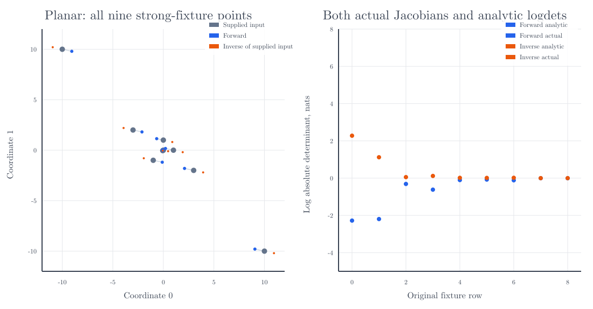
#include <dm/dm.hpp>
int main(){
namespace n=dm::nn;using T=n::Tensor;std::map<std::string,T> f;
for(auto& [k,x]:n::load_npz("build/planar_radial_density/radial/elementary_fixtures.npz"))f[k]=n::cast(x,n::DType::Float64);
auto col=[](const T& x,int k){return n::select(x,1,k);};auto input=f.at("input"),forward=f.at("forward"),inverse=f.at("inverse");
auto actual=[&](const char* prefix){auto a=f.at(std::string(prefix)+"jacobian_row0"),b=f.at(std::string(prefix)+"jacobian_row1");return n::log(col(a,0)*col(b,1)-col(a,1)*col(b,0));};
auto af=actual(""),ai=actual("inverse_"),error=n::max(n::abs(f.at("roundtrip")-input),{1},false);
auto left=dm::graphics::RPlot::create();left.segments(col(input,0).to_vector<double>(),col(input,1).to_vector<double>(),col(forward,0).to_vector<double>(),col(forward,1).to_vector<double>(),{203,213,225},1.5)
.points(col(input,0).to_vector<double>(),col(input,1).to_vector<double>(),"Supplied input",{100,116,139},5)
.points(col(forward,0).to_vector<double>(),col(forward,1).to_vector<double>(),"Forward",{37,99,235},3)
.points(col(inverse,0).to_vector<double>(),col(inverse,1).to_vector<double>(),"Inverse of supplied input",{234,88,12},2)
.margins(78,22,54,70).x_limits(-12,12).y_limits(-12,12).x_label("Coordinate 0").y_label("Coordinate 1").title("Radial: all nine strong-fixture points");
auto rows=n::arange(0,9).to_vector<double>();auto right=dm::graphics::RPlot::create();
right.points(rows,f.at("forward_logdet").to_vector<double>(),"Forward analytic",{37,99,235},4)
.points(rows,af.to_vector<double>(),"Forward actual",{37,99,235},1)
.points(rows,f.at("inverse_logdet").to_vector<double>(),"Inverse analytic",{234,88,12},4)
.points(rows,ai.to_vector<double>(),"Inverse actual",{234,88,12},1)
.margins(78,22,54,70).x_limits(-.5,8.5).y_limits(-5,8).x_label("Original fixture row").y_label("Log absolute determinant, nats").title("Both actual Jacobians and analytic logdets");
dm::graphics::RLayout::create(1,2).add(left).add(right).size(1100,574).fit_panels().save_svg("build/pr_radial_fixture.svg");
n::save_npz("build/pr_radial_fixture_plot_values.npz",{{"forward_actual_logdet",af},{"inverse_actual_logdet",ai},{"roundtrip_max_coordinate_error",error}});
std::print("| Row | Input x0,x1 | Forward y0,y1 | Inverse of input | Forward logdet | Inverse logdet | Roundtrip max error |\n|---:|---|---|---|---:|---:|---:|\n");
auto x=input.to_vector<double>(),y=forward.to_vector<double>(),z=inverse.to_vector<double>(),ld=f.at("forward_logdet").to_vector<double>(),il=f.at("inverse_logdet").to_vector<double>(),e=error.to_vector<double>();
for(int i=0;i<9;++i)std::print("|{}|{:.7g},{:.7g}|{:.7g},{:.7g}|{:.7g},{:.7g}|{:.10g}|{:.10g}|{:.7g}|\n",i,x[2*i],x[2*i+1],y[2*i],y[2*i+1],z[2*i],z[2*i+1],ld[i],il[i],e[i]);
}| Row | Input x0,x1 | Forward y0,y1 | Inverse of input | Forward logdet | Inverse logdet | Roundtrip max error |
|---|---|---|---|---|---|---|
| 0 | 0.3,-0.2 | 0.3,-0.2 | 0.3,-0.2 | -4.266389847 | 4.266389847 | 0 |
| 1 | 0,0 | 0.1950425,-0.1300283 | -0.3127946,0.2085297 | -1.703159094 | 1.064599395 | 0 |
| 2 | 1,0 | 0.6409527,-0.1025849 | 1.468249,0.1337854 | -1.073792458 | 0.7133651376 | 5.960464e-08 |
| 3 | 0,1 | 0.1190715,0.523714 | -0.1388516,1.555406 | -0.702550292 | 0.5009199977 | 0 |
| 4 | -1,-1 | -0.5428457,-0.7186743 | -1.515555,-1.317265 | -0.5844841599 | 0.4299563468 | 5.960464e-08 |
| 5 | 3,-2 | 2.43374,-1.622494 | 3.591552,-2.394368 | -0.2865586281 | 0.2354344726 | 0 |
| 6 | -3,2 | -2.408139,1.605426 | -3.6113,2.407533 | -0.2348329872 | 0.1980474889 | 0 |
| 7 | 10,-10 | 9.414783,-9.40875 | 10.58751,-10.59357 | -0.0663658157 | 0.0625115484 | 0 |
| 8 | -10,10 | -9.406917,9.412675 | -10.59521,10.58943 | -0.06307338923 | 0.05957029015 | 0 |
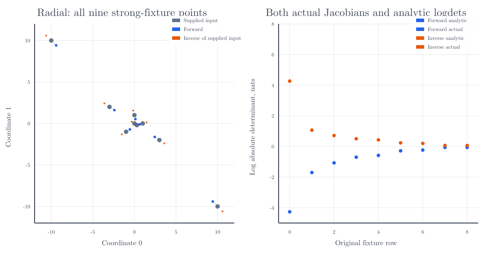
Keep parameter gradients through both inverses
These are final-model partials of the separate eight-prior-row inverse objective, not the fitting NLL. All 22 planar and 18 radial scalar coordinates are shown; vector leaves are expanded by coordinate. The table provides the name for every plotted ordinal. Independent Double finite differences check all 40 parameter coordinates, maximum error 1.877e−10; the native full program matches every source Float32 partial exactly. A live higher graph is a source computational graph property; it does not override the planar stopped-correction caveat.
#include <dm/dm.hpp>
int main(){
namespace n=dm::nn;auto layout=dm::graphics::RLayout::create(1,2);
std::print("| Family | Ordinal | Parameter coordinate | Inverse-objective partial |\n|---|---:|---|---:|\n");
for(auto family:{"planar","radial"}){
std::vector<double> rows,gradients;int row=0;
for(auto& [key,value]:n::load_npz(std::string("build/planar_radial_density/")+family+"/inverse_gradients.npz")){
auto values=value.to_vector<double>();for(std::size_t i=0;i<values.size();++i){rows.push_back(row);gradients.push_back(values[i]);std::print("|{}|{}|{}[{}]|{:.12g}|\n",family,row++,key,i,values[i]);}}
auto plot=dm::graphics::RPlot::create();plot.lines({-.5,22.5},{0,0},"Zero reference",{148,163,184})
.points(rows,gradients,"All scalar partials",{37,99,235},4)
.margins(78,22,54,70).x_limits(-.5,22.5).y_limits(-4.1,2.8).x_label("Parameter-coordinate ordinal (table)").y_label("Inverse-objective partial").title(std::string(family)+": all inverse parameter partials");layout.add(plot);
}
layout.size(1100,520).fit_panels().save_svg("build/pr_inverse_gradients.svg");
}| Family | Ordinal | Parameter coordinate | Inverse-objective partial |
|---|---|---|---|
| planar | 0 | flow0/angle[0] | -0.00450453022495 |
| planar | 1 | flow0/bias[0] | 0.00558572122827 |
| planar | 2 | flow0/log_frequency[0] | -0.000191437575268 |
| planar | 3 | flow0/perpendicular[0] | -0.304365336895 |
| planar | 4 | flow0/raw_projection[0] | -0.818869590759 |
| planar | 5 | flow1/angle[0] | -0.0671263709664 |
| planar | 6 | flow1/bias[0] | -0.0245277155191 |
| planar | 7 | flow1/log_frequency[0] | 0.00972819235176 |
| planar | 8 | flow1/perpendicular[0] | -0.388452768326 |
| planar | 9 | flow1/raw_projection[0] | -1.02134680748 |
| planar | 10 | flow2/angle[0] | -0.00517547130585 |
| planar | 11 | flow2/bias[0] | -0.0472621507943 |
| planar | 12 | flow2/log_frequency[0] | -0.00636578910053 |
| planar | 13 | flow2/perpendicular[0] | 0.380689620972 |
| planar | 14 | flow2/raw_projection[0] | -0.966211438179 |
| planar | 15 | flow3/angle[0] | 0.00375915318727 |
| planar | 16 | flow3/bias[0] | -0.00207063136622 |
| planar | 17 | flow3/log_frequency[0] | 0.0237370003015 |
| planar | 18 | flow3/perpendicular[0] | 0.3395845294 |
| planar | 19 | flow3/raw_projection[0] | -0.817888319492 |
| planar | 20 | log_scale[0] | -1.99545240402 |
| planar | 21 | log_scale[1] | -3.04200053215 |
| radial | 0 | flow0/center[0] | -0.00134702771902 |
| radial | 1 | flow0/center[1] | 0.00144532322884 |
| radial | 2 | flow0/raw_alpha[0] | 1.11279070377 |
| radial | 3 | flow0/raw_beta[0] | -1.17500329018 |
| radial | 4 | flow1/center[0] | 0.0144399926066 |
| radial | 5 | flow1/center[1] | -0.00330179929733 |
| radial | 6 | flow1/raw_alpha[0] | 1.08172619343 |
| radial | 7 | flow1/raw_beta[0] | -1.13267719746 |
| radial | 8 | flow2/center[0] | 0.00251399725676 |
| radial | 9 | flow2/center[1] | 0.00178977847099 |
| radial | 10 | flow2/raw_alpha[0] | 1.10707724094 |
| radial | 11 | flow2/raw_beta[0] | -1.1711306572 |
| radial | 12 | flow3/center[0] | -0.00968636572361 |
| radial | 13 | flow3/center[1] | -0.00741750001907 |
| radial | 14 | flow3/raw_alpha[0] | 1.08443796635 |
| radial | 15 | flow3/raw_beta[0] | -1.13561952114 |
| radial | 16 | log_scale[0] | -2.06845712662 |
| radial | 17 | log_scale[1] | -2.95615887642 |

Retain every observation and the fixed-final outcomes
The common observation plot retains all 768 original rows. The two three-epoch validation paths are descriptive: both final checkpoints were fixed in advance. The comparison table uses the same held-out rows and fitting-only Gaussian moments for both families. Planar improves only slightly on the full Gaussian; radial finishes worse. Both remain above analytic truth. No between-run uncertainty or broad generalization improvement is claimed.
#include <dm/dm.hpp>
int main(){
namespace n=dm::nn;std::map<std::string,n::Tensor> data;
for(auto& [key,value]:n::load_npz("build/planar_radial_density/planar/data.npz"))data[key]=value;
auto plot=dm::graphics::RPlot::create();int i=0;
std::vector<dm::graphics::RGB> colors{{148,163,184},{37,99,235},{234,88,12}};
for(auto split:{"fit","validation","test"}){auto points=data.at(std::string(split)+"_points");
plot.points(n::select(points,1,0).to_vector<double>(),n::select(points,1,1).to_vector<double>(),split,colors[i++],3);}
plot.size(900,942).margins(90,24,72,84).x_limits(-4,7).y_limits(-4,7)
.x_label("x0").y_label("x1").title("Original banana pools: every row retained")
.save_svg("build/pr_data.svg");
}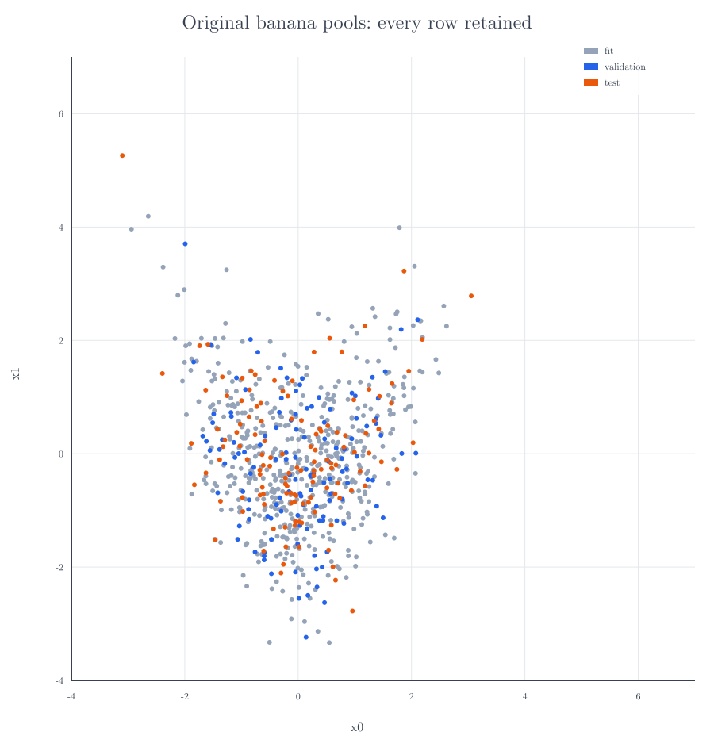
#include <dm/dm.hpp>
int main(){
namespace n=dm::nn;using T=n::Tensor;std::map<std::string,T> v;
for(auto& [k,x]:n::load_npz("build/planar_radial_density/planar/plot_values.npz"))v[k]=x;
auto mean=[](const T& x){return n::select(n::cumsum(x/double(x.size(0)),0),0,x.size(0)-1).item();};
auto plot=dm::graphics::RPlot::create();std::vector<double> final;int index=0;std::vector<dm::graphics::RGB> colors{{37,99,235},{234,88,12}};
for(auto family:{"planar","radial"}){std::ifstream file(std::string("build/planar_radial_density/")+family+"/history.tsv");std::string header;std::getline(file,header);std::vector<double> epochs,losses;double e,l,d;while(file>>e>>l>>d){epochs.push_back(e);losses.push_back(l);}plot.lines(epochs,losses,std::string(family)+" validation",colors[index]);
std::map<std::string,T> out;for(auto& [k,x]:n::load_npz(std::string("build/planar_radial_density/")+family+"/outputs.npz"))out[k]=x;final.push_back(out.at("loss").item());plot.points({3},{final.back()},std::string(family)+" fixed-final test",colors[index++],5);}
double full=mean(v.at("full_gaussian_point_nll")),diag=mean(v.at("diagonal_gaussian_point_nll")),identity=mean(v.at("identity_point_nll")),truth=mean(v.at("true_point_nll"));
plot.lines({1,3},{full,full},"Test fitted full Gaussian",{220,38,38}).lines({1,3},{diag,diag},"Test fitted diagonal",{126,34,206})
.lines({1,3},{identity,identity},"Test identity Gaussian",{100,116,139}).lines({1,3},{truth,truth},"Test analytic truth",{22,163,74})
.size(1100,620).margins(90,24,60,80).y_limits(2.75,3.35).x_label("Fixed fitting epoch").y_label("NLL, nats per two-coordinate row").title("Fixed-final: planar slight gain, radial Gaussian shortfall").save_svg("build/pr_history.svg");
std::print("| Fixed-final test method | NLL, nats/row |\n|---|---:|\n| Planar |{:.12f}|\n| Radial |{:.12f}|\n| Fitting-only full Gaussian |{:.12f}|\n| Fitting-only diagonal Gaussian |{:.12f}|\n| Identity Gaussian |{:.12f}|\n| Analytic banana truth |{:.12f}|\n",final[0],final[1],full,diag,identity,truth);
}| Fixed-final test method | NLL, nats/row |
|---|---|
| Planar | 2.991511106491 |
| Radial | 2.999574184418 |
| Fitting-only full Gaussian | 2.994631823106 |
| Fitting-only diagonal Gaussian | 2.993811360440 |
| Identity Gaussian | 3.013872926549 |
| Analytic banana truth | 2.796480843500 |
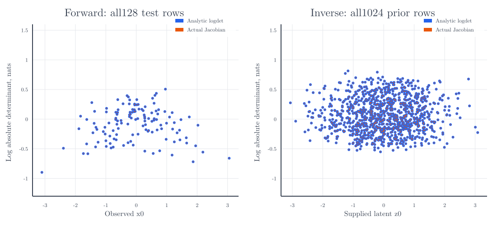
Compare complete density grids and inverse samples
Each density comparison retains all 16,384 source model cells and all 16,384 analytic-truth cells, at the original half-cell grid coordinates. Both figures share PDF colour limits [0,.20], the same 32-colour palette and physical axis orientation. These grids are diagnostics, not numerical normalization integrals. The near-Gaussian learned contours are less bent than the analytic banana. Every inverse sample and held-out row is retained in equal-scale observation plots; the latent plots compare all supplied prior rows with transformed test rows. Sampling uses only prior coordinates and frozen final parameters.
#include <dm/dm.hpp>
int main(){
namespace n=dm::nn;std::map<std::string,n::Tensor> data;
for(auto& [k,x]:n::load_npz("build/planar_radial_density/planar/grid.npz"))data[k]=x;
std::vector<double> axis;for(int i=0;i<128;++i)axis.push_back((i+.5)/16-4);
auto panel=[&](const char* key,const char* title){auto p=n::exp(data.at(key)).to_vector<double>();
std::vector<std::vector<double>> z(128,std::vector<double>(128));
for(int x=0;x<128;++x)for(int y=0;y<128;++y)z[x][y]=p[(127-y)*128+x];
auto plot=dm::graphics::RPlot::create();plot.image(axis,axis,z,dm::graphics::terrain_colors(32),0,.20)
.margins(72,22,54,64).x_limits(-4,4).y_limits(-4,4).x_label("x0").y_label("x1").title(title);return plot;};
dm::graphics::RLayout::create(1,2).add(panel("true_log_probability","Analytic banana PDF"))
.add(panel("model_log_probability","Final Planar PDF")).size(1100,574).fit_panels()
.save_svg("build/pr_planar_density.svg");
}
#include <dm/dm.hpp>
int main(){
namespace n=dm::nn;std::map<std::string,n::Tensor> a,b;
for(auto& [k,x]:n::load_npz("build/planar_radial_density/planar/samples.npz"))a[k]=x;
for(auto& [k,x]:n::load_npz("build/planar_radial_density/planar/data.npz"))b[k]=x;
auto left=a.at("samples"),right=b.at("test_points");
dm::graphics::RPlot::create().points(n::select(left,1,0).to_vector<double>(),n::select(left,1,1).to_vector<double>(),"Inverse samples",{148,163,184},3)
.points(n::select(right,1,0).to_vector<double>(),n::select(right,1,1).to_vector<double>(),"Held-out test",{234,88,12},4)
.size(900,942).margins(90,24,72,84).x_limits(-4,7).y_limits(-4,7)
.x_label("Coordinate 0").y_label("Coordinate 1").title("Planar observation space: held-out and all 1024 inverse samples").save_svg("build/pr_planar_samples.svg");
}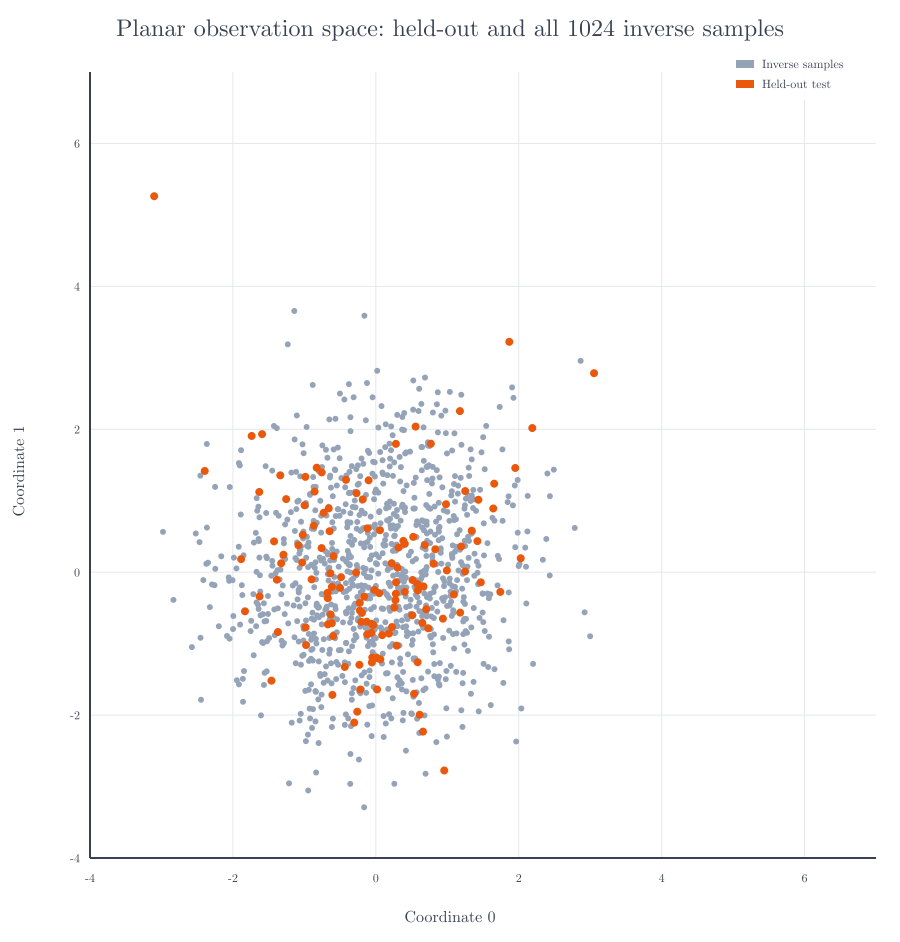
#include <dm/dm.hpp>
int main(){
namespace n=dm::nn;std::map<std::string,n::Tensor> a,b;
for(auto& [k,x]:n::load_npz("build/planar_radial_density/planar/samples.npz"))a[k]=x;
for(auto& [k,x]:n::load_npz("build/planar_radial_density/planar/outputs.npz"))b[k]=x;
auto left=a.at("prior"),right=b.at("latent");
dm::graphics::RPlot::create().points(n::select(left,1,0).to_vector<double>(),n::select(left,1,1).to_vector<double>(),"Gaussian prior",{148,163,184},3)
.points(n::select(right,1,0).to_vector<double>(),n::select(right,1,1).to_vector<double>(),"Transformed test",{234,88,12},4)
.size(900,942).margins(90,24,72,84).x_limits(-4,7).y_limits(-4,7)
.x_label("Coordinate 0").y_label("Coordinate 1").title("Planar latent space: transformed test and all 1024 Gaussian draws").save_svg("build/pr_planar_latent.svg");
}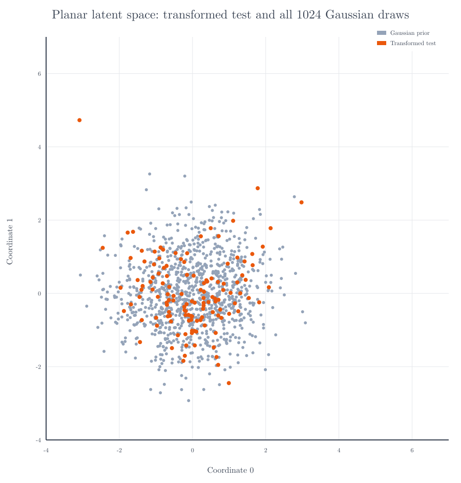
#include <dm/dm.hpp>
int main(){
namespace n=dm::nn;std::map<std::string,n::Tensor> data;
for(auto& [k,x]:n::load_npz("build/planar_radial_density/radial/grid.npz"))data[k]=x;
std::vector<double> axis;for(int i=0;i<128;++i)axis.push_back((i+.5)/16-4);
auto panel=[&](const char* key,const char* title){auto p=n::exp(data.at(key)).to_vector<double>();
std::vector<std::vector<double>> z(128,std::vector<double>(128));
for(int x=0;x<128;++x)for(int y=0;y<128;++y)z[x][y]=p[(127-y)*128+x];
auto plot=dm::graphics::RPlot::create();plot.image(axis,axis,z,dm::graphics::terrain_colors(32),0,.20)
.margins(72,22,54,64).x_limits(-4,4).y_limits(-4,4).x_label("x0").y_label("x1").title(title);return plot;};
dm::graphics::RLayout::create(1,2).add(panel("true_log_probability","Analytic banana PDF"))
.add(panel("model_log_probability","Final Radial PDF")).size(1100,574).fit_panels()
.save_svg("build/pr_radial_density.svg");
}
#include <dm/dm.hpp>
int main(){
namespace n=dm::nn;std::map<std::string,n::Tensor> a,b;
for(auto& [k,x]:n::load_npz("build/planar_radial_density/radial/samples.npz"))a[k]=x;
for(auto& [k,x]:n::load_npz("build/planar_radial_density/radial/data.npz"))b[k]=x;
auto left=a.at("samples"),right=b.at("test_points");
dm::graphics::RPlot::create().points(n::select(left,1,0).to_vector<double>(),n::select(left,1,1).to_vector<double>(),"Inverse samples",{148,163,184},3)
.points(n::select(right,1,0).to_vector<double>(),n::select(right,1,1).to_vector<double>(),"Held-out test",{234,88,12},4)
.size(900,942).margins(90,24,72,84).x_limits(-4,7).y_limits(-4,7)
.x_label("Coordinate 0").y_label("Coordinate 1").title("Radial observation space: held-out and all 1024 inverse samples").save_svg("build/pr_radial_samples.svg");
}#include <dm/dm.hpp>
int main(){
namespace n=dm::nn;std::map<std::string,n::Tensor> a,b;
for(auto& [k,x]:n::load_npz("build/planar_radial_density/radial/samples.npz"))a[k]=x;
for(auto& [k,x]:n::load_npz("build/planar_radial_density/radial/outputs.npz"))b[k]=x;
auto left=a.at("prior"),right=b.at("latent");
dm::graphics::RPlot::create().points(n::select(left,1,0).to_vector<double>(),n::select(left,1,1).to_vector<double>(),"Gaussian prior",{148,163,184},3)
.points(n::select(right,1,0).to_vector<double>(),n::select(right,1,1).to_vector<double>(),"Transformed test",{234,88,12},4)
.size(900,942).margins(90,24,72,84).x_limits(-4,7).y_limits(-4,7)
.x_label("Coordinate 0").y_label("Coordinate 1").title("Radial latent space: transformed test and all 1024 Gaussian draws").save_svg("build/pr_radial_latent.svg");
}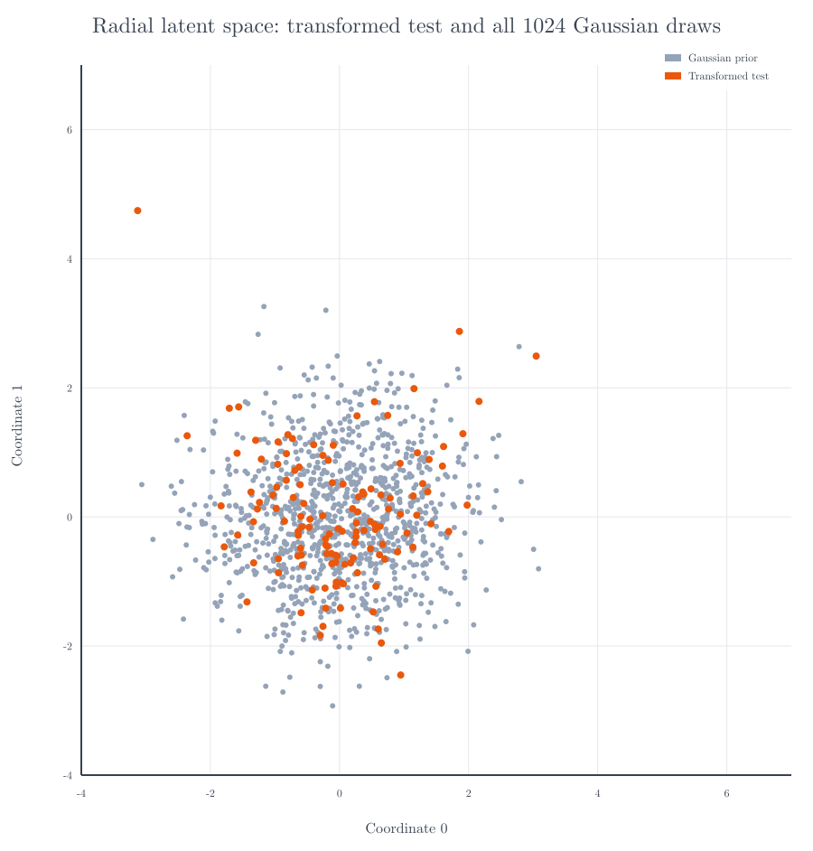
Verify each actual whole-map determinant on its own path
The following paired panels retain all 128 forward test rows and all 1,024 inverse prior rows per family. Analytic log determinants are compared with the log determinant of actual autograd Jacobians. These values vary with the supplied point; the inverse panel uses the original Gaussian input, not a re-labelled forward test batch. Signed residual plots retain every difference. The fitted planar ranges are −.131517187 to −.092588484 forward and .093196355 to .131750777 inverse; radial ranges are −.268946916 to −.074667394 forward and .089262053 to .275239974 inverse. Positive actual determinants agree within Float32 rounding. The independent audit separately composes Double matrix Jacobians and checks both families, all 96 Adam writes and all source samples.
#include <dm/dm.hpp>
int main(){
namespace n=dm::nn;std::map<std::string,n::Tensor> data,out,samples,v;
for(auto& [k,x]:n::load_npz("build/planar_radial_density/planar/data.npz"))data[k]=x;
for(auto& [k,x]:n::load_npz("build/planar_radial_density/planar/outputs.npz"))out[k]=x;
for(auto& [k,x]:n::load_npz("build/planar_radial_density/planar/samples.npz"))samples[k]=x;
for(auto& [k,x]:n::load_npz("build/planar_radial_density/planar/plot_values.npz"))v[k]=x;
auto panel=[&](const n::Tensor& points,const n::Tensor& analytic,const n::Tensor& actual,const char* title,const char* xlabel){
auto x=n::select(points,1,0).to_vector<double>();auto p=dm::graphics::RPlot::create();
p.points(x,analytic.to_vector<double>(),"Analytic logdet",{37,99,235},3)
.points(x,actual.to_vector<double>(),"Actual Jacobian",{234,88,12},1)
.margins(72,22,54,64).y_limits(-.4,.7).x_label(xlabel).y_label("Log absolute determinant, nats").title(title);return p;};
dm::graphics::RLayout::create(1,2)
.add(panel(data.at("test_points"),out.at("forward_logdet"),v.at("actual_logdet"),"Planar forward: all128 test rows","Observed x0"))
.add(panel(samples.at("prior"),samples.at("inverse_logdet"),v.at("inverse_actual_logdet"),"Planar inverse: all1024 prior rows","Supplied latent z0"))
.size(1100,500).fit_panels().save_svg("build/pr_planar_volume.svg");
}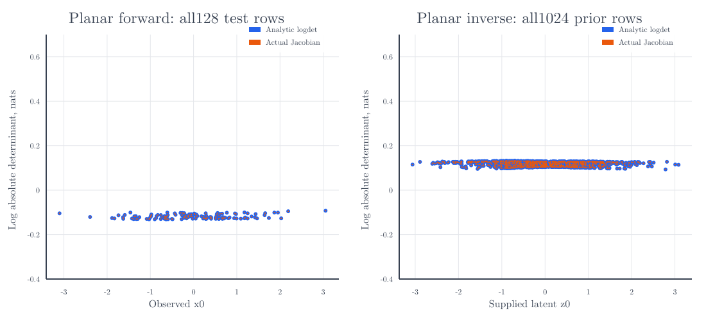
#include <dm/dm.hpp>
int main(){
namespace n=dm::nn;std::map<std::string,n::Tensor> v,o,samples;
for(auto& [k,x]:n::load_npz("build/planar_radial_density/planar/plot_values.npz"))v[k]=x;
for(auto& [k,x]:n::load_npz("build/planar_radial_density/planar/outputs.npz"))o[k]=x;
for(auto& [k,x]:n::load_npz("build/planar_radial_density/planar/samples.npz"))samples[k]=x;
auto a=(v.at("actual_logdet")-n::cast(o.at("forward_logdet"),n::DType::Float64))*1e7,b=(v.at("inverse_actual_logdet")-n::cast(samples.at("inverse_logdet"),n::DType::Float64))*1e7;
auto p=dm::graphics::RPlot::create();p.points(n::arange(0,128).to_vector<double>(),a.to_vector<double>(),"Forward, all128 test rows",{37,99,235},3)
.points(n::arange(0,1024).to_vector<double>(),b.to_vector<double>(),"Inverse, all1024 prior rows",{234,88,12},2)
.y_limits(-6,9).x_label("Row index in its own pool").y_label("(Actual - analytic logdet) x 1e7")
.title("Planar actual Jacobians match each per-point log determinant")
.save_svg("build/pr_planar_jacobians.svg");
}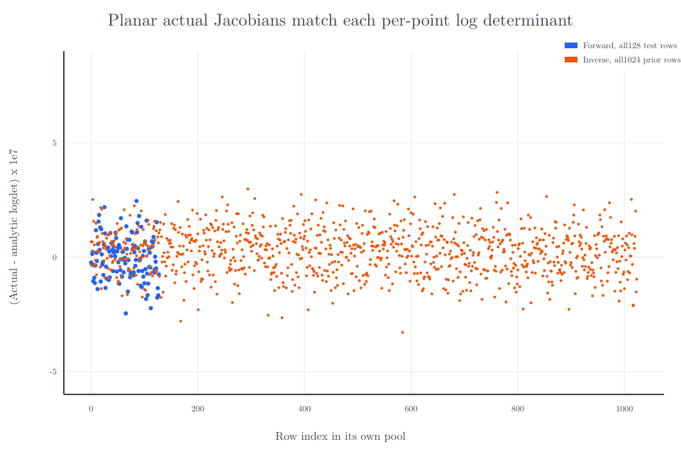
#include <dm/dm.hpp>
int main(){
namespace n=dm::nn;std::map<std::string,n::Tensor> v;
for(auto& [k,x]:n::load_npz("build/planar_radial_density/planar/plot_values.npz"))v[k]=x;
auto error=v.at("normalization_error");
dm::graphics::RPlot::create().points(n::arange(0,1024).to_vector<double>(),(error*1e6).to_vector<double>(),"All prior rows",{37,99,235},2)
.y_limits(0,5).x_label("Original prior row index").y_label("Absolute identity residual x 1e6, nats")
.title("Planar: every inverse sample satisfies change of variables")
.save_svg("build/pr_planar_normalization.svg");
std::print("| Inverse / Float32 check | Maximum absolute error |\n|---|---:|\n| inverse(forward(test)) |{:.12g}|\n| forward(inverse(prior)) |{:.12g}|\n| Change-of-variables log identity |{:.12g}|\n",n::max(v.at("forward_roundtrip_absolute_error")).item(),n::max(v.at("inverse_roundtrip_absolute_error")).item(),n::max(error).item());
}| Inverse / Float32 check | Maximum absolute error |
|---|---|
| inverse(forward(test)) | 4.76837158203e-07 |
| forward(inverse(prior)) | 4.76837158203e-07 |
| Change-of-variables log identity | 1.40234891521e-06 |
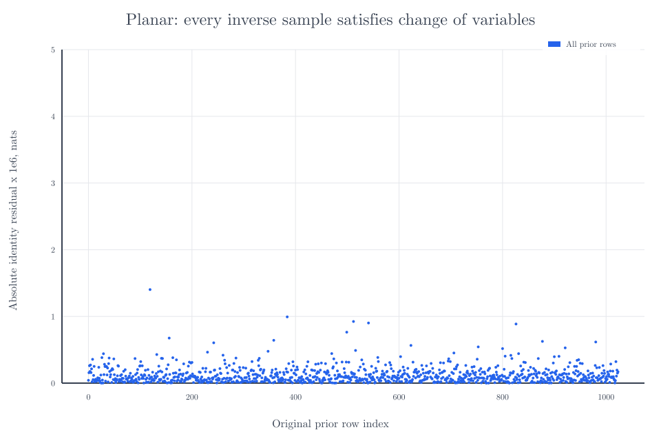
#include <dm/dm.hpp>
int main(){
namespace n=dm::nn;std::map<std::string,n::Tensor> data,out,samples,v;
for(auto& [k,x]:n::load_npz("build/planar_radial_density/radial/data.npz"))data[k]=x;
for(auto& [k,x]:n::load_npz("build/planar_radial_density/radial/outputs.npz"))out[k]=x;
for(auto& [k,x]:n::load_npz("build/planar_radial_density/radial/samples.npz"))samples[k]=x;
for(auto& [k,x]:n::load_npz("build/planar_radial_density/radial/plot_values.npz"))v[k]=x;
auto panel=[&](const n::Tensor& points,const n::Tensor& analytic,const n::Tensor& actual,const char* title,const char* xlabel){
auto x=n::select(points,1,0).to_vector<double>();auto p=dm::graphics::RPlot::create();
p.points(x,analytic.to_vector<double>(),"Analytic logdet",{37,99,235},3)
.points(x,actual.to_vector<double>(),"Actual Jacobian",{234,88,12},1)
.margins(72,22,54,64).y_limits(-.4,.7).x_label(xlabel).y_label("Log absolute determinant, nats").title(title);return p;};
dm::graphics::RLayout::create(1,2)
.add(panel(data.at("test_points"),out.at("forward_logdet"),v.at("actual_logdet"),"Radial forward: all128 test rows","Observed x0"))
.add(panel(samples.at("prior"),samples.at("inverse_logdet"),v.at("inverse_actual_logdet"),"Radial inverse: all1024 prior rows","Supplied latent z0"))
.size(1100,500).fit_panels().save_svg("build/pr_radial_volume.svg");
}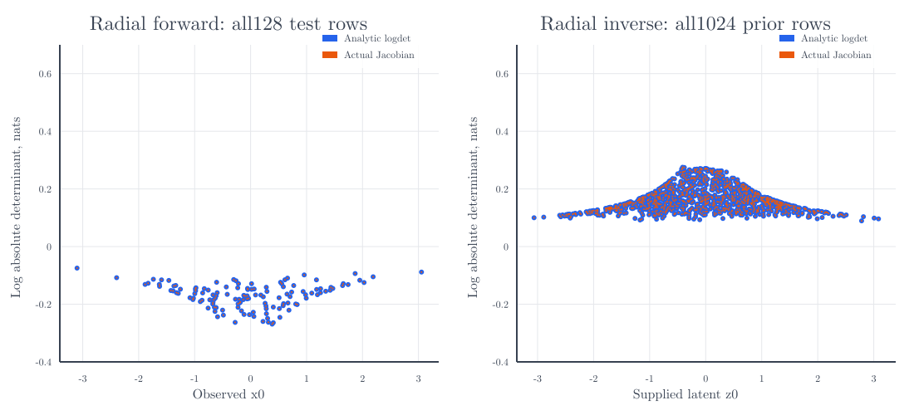
#include <dm/dm.hpp>
int main(){
namespace n=dm::nn;std::map<std::string,n::Tensor> v,o,samples;
for(auto& [k,x]:n::load_npz("build/planar_radial_density/radial/plot_values.npz"))v[k]=x;
for(auto& [k,x]:n::load_npz("build/planar_radial_density/radial/outputs.npz"))o[k]=x;
for(auto& [k,x]:n::load_npz("build/planar_radial_density/radial/samples.npz"))samples[k]=x;
auto a=(v.at("actual_logdet")-n::cast(o.at("forward_logdet"),n::DType::Float64))*1e7,b=(v.at("inverse_actual_logdet")-n::cast(samples.at("inverse_logdet"),n::DType::Float64))*1e7;
auto p=dm::graphics::RPlot::create();p.points(n::arange(0,128).to_vector<double>(),a.to_vector<double>(),"Forward, all128 test rows",{37,99,235},3)
.points(n::arange(0,1024).to_vector<double>(),b.to_vector<double>(),"Inverse, all1024 prior rows",{234,88,12},2)
.y_limits(-6,9).x_label("Row index in its own pool").y_label("(Actual - analytic logdet) x 1e7")
.title("Radial actual Jacobians match each per-point log determinant")
.save_svg("build/pr_radial_jacobians.svg");
}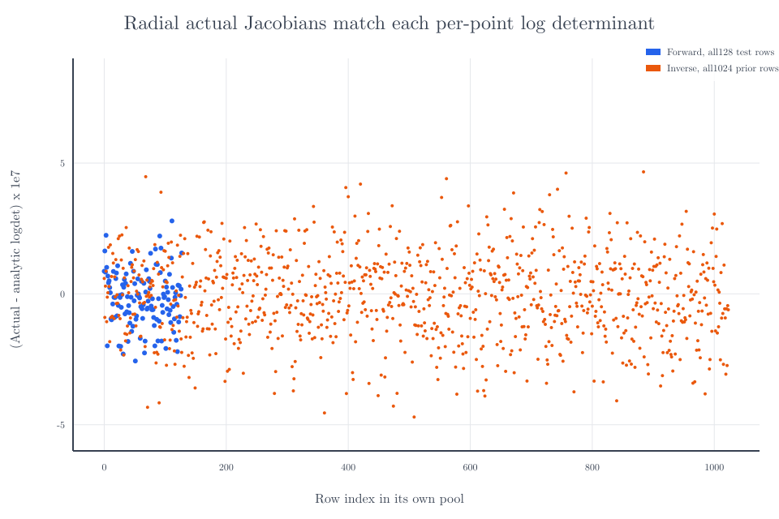
#include <dm/dm.hpp>
int main(){
namespace n=dm::nn;std::map<std::string,n::Tensor> v;
for(auto& [k,x]:n::load_npz("build/planar_radial_density/radial/plot_values.npz"))v[k]=x;
auto error=v.at("normalization_error");
dm::graphics::RPlot::create().points(n::arange(0,1024).to_vector<double>(),(error*1e6).to_vector<double>(),"All prior rows",{37,99,235},2)
.y_limits(0,5).x_label("Original prior row index").y_label("Absolute identity residual x 1e6, nats")
.title("Radial: every inverse sample satisfies change of variables")
.save_svg("build/pr_radial_normalization.svg");
std::print("| Inverse / Float32 check | Maximum absolute error |\n|---|---:|\n| inverse(forward(test)) |{:.12g}|\n| forward(inverse(prior)) |{:.12g}|\n| Change-of-variables log identity |{:.12g}|\n",n::max(v.at("forward_roundtrip_absolute_error")).item(),n::max(v.at("inverse_roundtrip_absolute_error")).item(),n::max(error).item());
}| Inverse / Float32 check | Maximum absolute error |
|---|---|
| inverse(forward(test)) | 4.76837158203e-07 |
| forward(inverse(prior)) | 4.76837158203e-07 |
| Change-of-variables log identity | 1.38166692931e-06 |
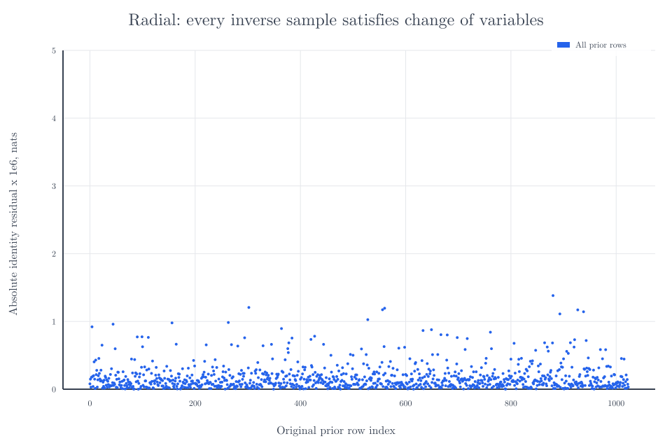
Interpret the density and derivative checks together
For every supplied prior draw, the log identity is log p_X(inverse(z))+log|det J_inverse(z)|=log phi(z). The residuals above check that identity numerically on every sample. They do not claim an independently computed global density integral. Both forward/inverse coordinate roundtrips have source maximum errors 4.768371582e−7. Fixed-final likelihood evidence is mixed: the planar model is only .003120717 nats/row below the full Gaussian, while radial is .004942361 above it. Both remain well above analytic truth.
The source is preserved at its original scope: separate tiny two-dimensional models, three fixed epochs, one initialization per family and procedural banana observations. No additional fit, seed search, test-based selection or VAE/ELBO claim is introduced. The editable program and core APIs retain all 48 original archives / 281,879 array values and all 288 update captures / 3,936 values exactly, including both strong fixtures and every inverse parameter gradient. Independent NumPy calculations use explicit elementary differentials and matrix composition, with no native-helper calls, external autodiff, refit or substitute data. The report exposes the numerical planar inverse and derivative caveat, radial centre convention and the radial Gaussian shortfall alongside the plots.